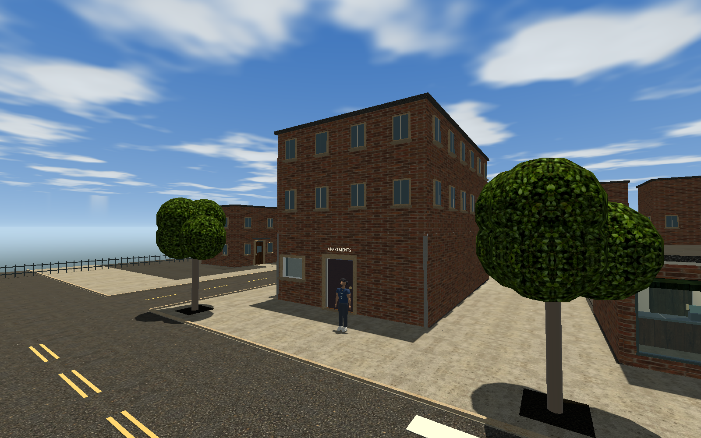

AFewBuds east expansion
Residential streets, rear lanes, five garages and a pocket park. The two old east-edge exteriors are reorganized into the residential rows. The starter apartment, corner shop, new house and their finished interiors remain in place.
All 16 tree trunks are centered on soil patches, with clear paving cutouts and room around buildings.
818 expansion checks pass, including 372 upper-story windows. The new buildings are exterior scenery with collision; their interiors and interactive seating are future work. Rod is staged only for these review renders. Build and validation details.
Apartment upper floors above the taller ground floor
